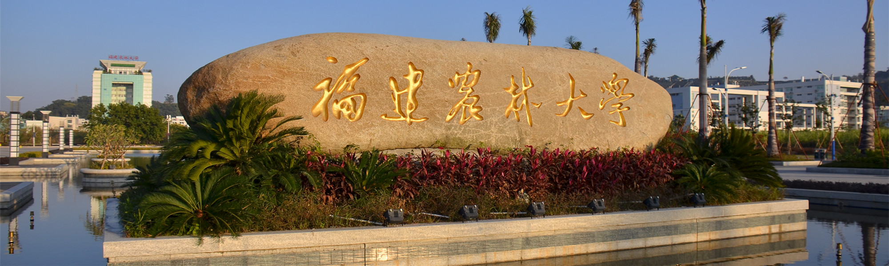
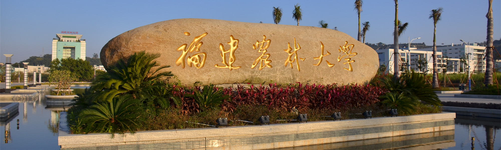

福建农林大学自然科学类国家、部级科研机构一览表
| 机构名称 | 批准单位 |
|---|---|
| 国家重点实验室 | |
| 省部共建闽台作物有害生物生态防控国家重点实验室 | 科技部 |
| 国家工程技术研究中心 | |
| 国家菌草工程技术研究中心 | 科技部 |
| 国家甘蔗工程技术研究中心 | 科技部 |
| 省部共建协同创新中心 | |
| 菌草生态产业省部共建协同创新中心 | 教育部 |
| 国家地方联合工程研究中心（工程实验室） | |
| 天然生物毒素国家地方联合工程实验室（福建） | 国家发改委 |
| 菌草综合开发利用技术国家地方联合工程研究中心（福建） | 国家发改委 |
| 国家现代农业产业技术研发中心 | |
| 国家甘蔗产业技术研发中心（“十二五”期间） | 农业农村部 |
| 引智基地 | |
| 亚热带作物害虫生态防控创新引智基地 | 国家外国专家局 |
| 部级重点实验室（观测站）、研究中心 | |
| 生物农药与化学生物学教育部重点实验室 | 教育部 |
| 作物遗传育种与综合利用教育部重点实验室 | 教育部 |
| 蜂产品加工与应用教育部工程研究中心 | 教育部 |
| 闽台特色海洋食品加工及营养健康教育部工程研究中心 | 教育部 |
| 海洋生物科技创新公共服务平台 | |
| 南方红壤区水土保持国家林业和草原局重点实验室 | 国家林业和草原局 |
| 植物纤维功能材料国家林业和草原局重点实验室 | 国家林业和草原局 |
| 兰科植物保护与利用国家林业和草原局重点实验室（我校共建） | 国家林业和草原局 |
| 国家林业和草原局杉木工程技术研究中心 | 国家林业和草原局 |
| 国家林业和草原局森林公园工程技术研究中心 | 国家林业和草原局 |
| 福建长汀红壤丘陵生态系统定位观测研究站 | 国家林业和草原局 |
| 农业农村部福建甘蔗生物学与遗传育种重点实验室 | 农业农村部 |
| 农业农村部闽台作物有害生物综合治理重点实验室 | 农业农村部 |
| 农业农村部东南黄红麻科学观测实验站 | 农业农村部 |
| 农业农村部福建蜜蜂生物学科学观测实验站 | 农业农村部 |
| 福建省尤溪县国家级农作物品种区域试验站 | 农业农村部 |
| 国家水利风景区研究中心 | 水利部景区办 |
| 部级检验测试中心 | |
| 农业农村部甘蔗及制品质量监督检验测试中心 | 农业农村部 |
| 国家农作物品种改良中心、分中心 | |
| 国家糖料作物改良中心福州甘蔗分中心 | 农业农村部 |
| 国家食用菌品种改良中心福建分中心 | 农业农村部 |
| 国家农产品加工技术研发中心、分中心 | |
| 国家农产品加工技术研发（蔬菜）专业分中心 | 农业农村部 |
| 国际合作、闽台交流基地 | |
| 害虫生态防控国际合作联合实验室 | 教育部 |
| 联合国(中国)实蝇防控研究中心 | 联合国粮农组织/国际原子能机构联合司 |
| 菌草技术国际科技合作基地 | 科技部 |
| 闽台作物害虫生态防控国际科技合作基地 | 科技部 |
| 海峡两岸科技产业合作基地（成员单位） | 科技部 |
| 农业农村部海峡两岸农业技术合作中心 | 农业农村部 |
| 台湾农民创业园科技服务中心 | 国台办 |


 闽公网安备35010402350912号，网络安全等级保护备案编号35011943059-00001
闽公网安备35010402350912号，网络安全等级保护备案编号35011943059-00001